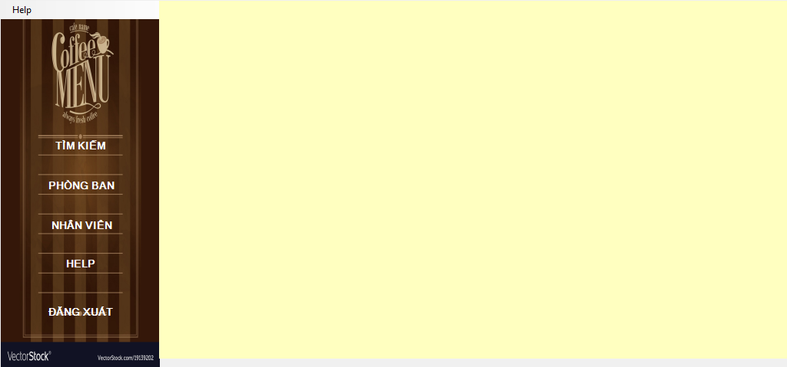
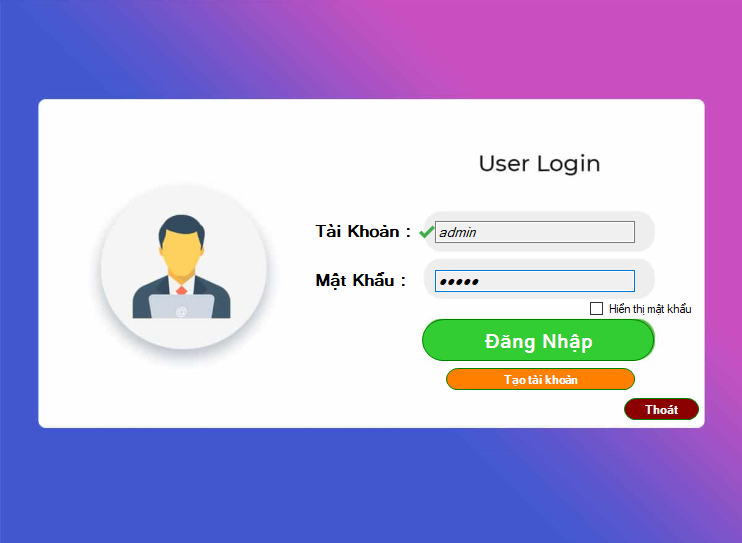
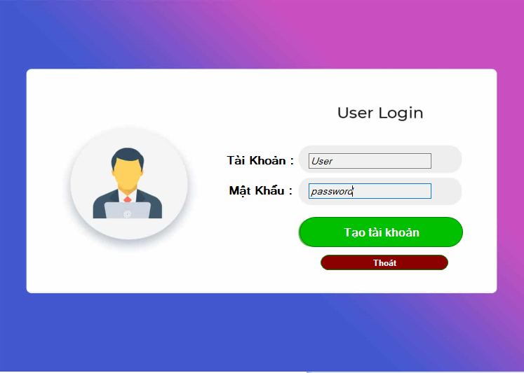
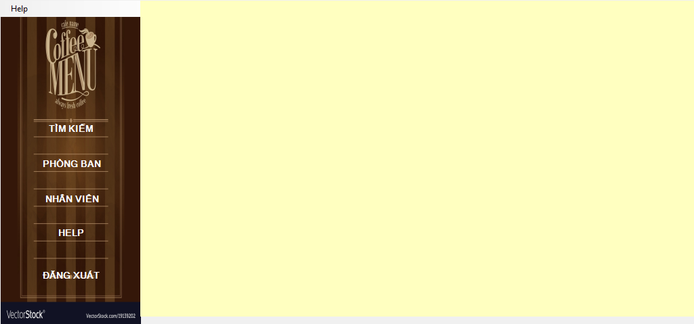
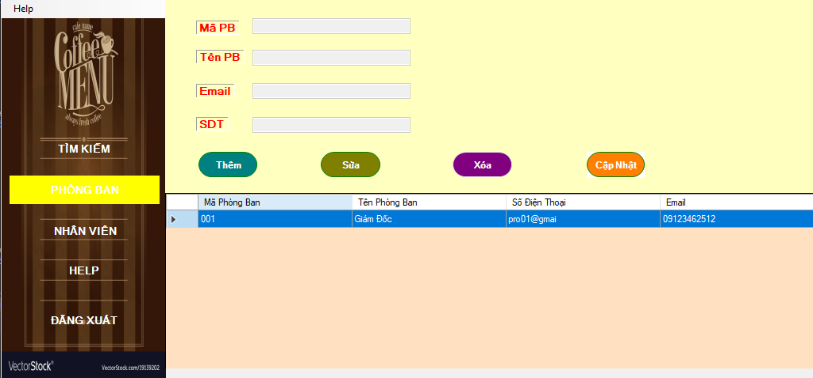
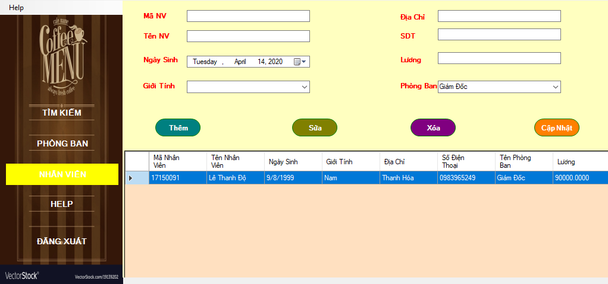

3. Ok khi bạn đã Login thành công bạn thấy giao diện menu như trên
4. Ở mục tìm kiếm bạn có thể tìm kiếm thông tin nhân viên = tên hoặc mã nv

1. Khi mở ứng dụng sẽ có giao diện như này nhé , bạn hãy đăng nhập bằng account đã được cung cấp !!
2. Nếu bạn chưa có tài khoản hãy vào mục tạo tài khoản để tạo 1 account riêng cho mình
3. Ok khi bạn đã Login thành công bạn thấy giao diện menu như trên
4. Ở mục tìm kiếm bạn có thể tìm kiếm thông tin nhân viên = tên hoặc mã nv
5. Ở phần phòng ban cho phép bạn thao tác với các chức năng cơ bản như thêm, sửa, xóa và hãy nhớ update nhé
6. Tương tự như mục 5 nhưng ở đây là nhân viên nhé bạn
